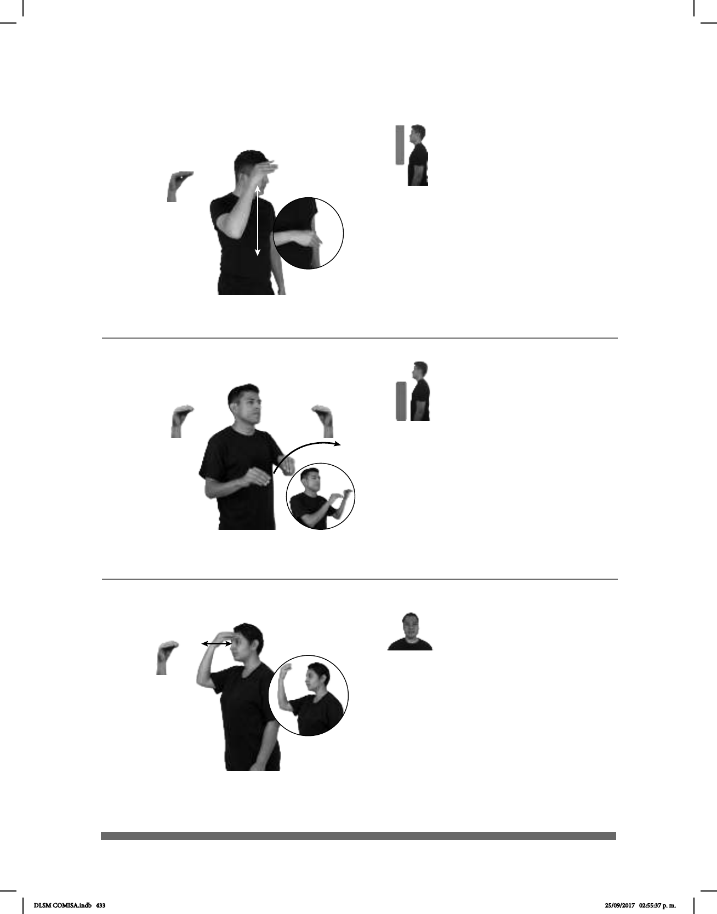

433
(O-16)
Seña: SM
O.9
Palma hacia abajo.
De la cabeza al abdomen.
Movimiento: Recto
Cabello que crece liso, que
no tiene ondas ni rizos.
pro-ELLA TENER CABELLO-LACÍO
Ella tiene cabello lacio.
Seña: SM
O.5
Palma hacia adentro.
Sobre el centro de la frente.
Movimiento: La mano golpea la frente
repetidamente.
: sust. f. Colonia y parque de
la Ciudad de México.
La seña antes
representaba la posición del castillo y
se realizaba encima de la cabeza. La
mano cambió de lugar por comodidad.
(O-18)
CHAPULTEPEC
área
MUCHOS ANIMALES VIVIR
aquí
Viven muchos animales en Chapultepec.
(O-17) Cambiarse / Mudarse
Seña: SS
O.5
Palmas hacia abajo.
A la altura del pecho de
izquierda a derecha.
Movimiento: Las manos simulan un
salto.
Cabeceo en
diagonal.
1. v. prnl. Irse a instalar o a
radicar una persona en un lugar
diferente de donde estaba antes. 2. v.
prnl. Cambiar de casa.
Se pueden agregar las
señas compuestas: CAMBIAR +
MUDAR.
MAÑANA pos-MI #TÍO MUDARSE CASA
Mi tío se mudará de casa mañana.
DLSM COMISA.indb 433 25/09/2017 02:55:37 p. m.